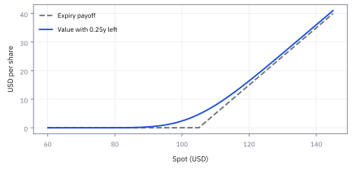

13.2 Itô's Lemma
เมื่อ $X$ ขยับด้วย drift $a$ และส่วนสุ่มขนาด $b$ ค่าของ $f(t,X)$ ได้ drift เพิ่ม $\tfrac12b^2f_{xx}$ ที่ chain rule ปกติไม่เห็น พจน์นี้ทำให้ราคากลางของ SPY ปีหน้าต่ำกว่าค่าเฉลี่ย
SPY อยู่ที่ \$520 โต๊ะเขียนแบบจำลองเป็น SDE $dS_t=\mu S_t\,dt+\sigma S_t\,dW_t$ ด้วย drift 8% และความผันผวน 18% ต่อปี แปลว่าในก้าวสั้น ๆ เปอร์เซ็นต์ที่ราคาขยับมีค่าเฉลี่ย $\mu\,dt$ นักวิเคราะห์หารด้วย $S$ ได้ $dS/S=\mu\,dt+\sigma\,dW$ แล้วใช้ chain rule $d\ln S=dS/S$ สรุปว่า log ราคาโต 8% ต่อปี ราคากลางปีหน้า (median) คือ $520e^{0.08}=\$563.31$ และโอกาสจบปีต่ำกว่า \$520 คือ 32.8% รายงานความเสี่ยงควรใช้สองตัวเลขนี้ไหม?
ลองตอบก่อนเปิดเฉลย
ไม่ควร chain rule ทิ้งพจน์ความโค้งของ log ไป log ราคาจริงโต $0.08-\tfrac12(0.18)^2=0.0638$ ต่อปี median จึงเป็น \$554.26 ต่ำกว่าที่คิด \$9.05 และโอกาสจบปีต่ำกว่า \$520 คือ 36.2% ไม่ใช่ 32.8% ส่วน \$563.31 ไม่ได้ผิดทั้งหมด มันคือค่าเฉลี่ยของราคาปลายปีพอดี แค่ตอบคนละคำถาม
สิ่งที่เราจะสร้าง
13.1 ซ่อม chain rule สำหรับ $f(W)$ โดยเก็บพจน์ $\tfrac12f''\,dt$ ไว้ แต่ราคาไม่ได้เป็น $W$ ตรง ๆ ราคามี drift และขนาดของส่วนสุ่มขึ้นกับราคาวันนั้น หน้านี้ทำ Taylor แบบเดียวกันกับ $f(t,X_t)$ เมื่อ $X$ ขยับตาม SDE ใด ๆ ได้กฎเต็มรูปที่เรียกว่า Itô's lemma
จากนั้นใช้มันกับ GBM ของ 10.1 พิสูจน์ว่า SDE ของโต๊ะกับสูตร exponential ของ 10.1 คือ process เดียวกัน (ตามที่ 10.1 ขั้นที่ 4 สัญญาไว้) ตอบโจทย์เปิดเรื่อง ตรวจด้วยการเดิน SDE ทีละวันโดยไม่ใช้ผลของ Itô เลย แล้วดูว่าความผันผวนกัดการโตของ median อย่างไร
ศัพท์ที่ใช้ในหัวข้อนี้
- Stochastic differential equation (SDE)
- สูตรบอกว่าในก้าวสั้น ๆ ตัวแปรขยับเท่าไร คือส่วนที่คาดได้คูณเวลา บวกส่วนสุ่มคูณการขยับของ Brownian motion ใช้เขียนแบบจำลองราคาและอัตราดอกเบี้ย เพราะคนบนโต๊ะคิดเป็นการขยับรายวันก่อนคิดเป็นสูตรปิด
- Drift และ diffusion coefficient
- $a$ คือส่วนที่คาดได้ต่อหน่วยเวลา $b$ คือตัวคูณของ $dW$ ซึ่งกำหนดขนาดของส่วนสุ่ม ทั้งสองอ่านค่าที่ต้นก้าว และขึ้นกับเวลาและค่าปัจจุบันได้
- Itô's lemma
- chain rule สำหรับ $f(t,X_t)$ เมื่อ $X$ ขยับตาม SDE ต่างจาก chain rule ปกติตรงที่ drift มีพจน์ $\tfrac12b^2f_{xx}$ เพิ่ม ใช้หาการขยับของ log ราคา มูลค่า option และทุกตัวแปรที่แปลงรูปจากราคา
- Geometric Brownian Motion (GBM)
- SDE $dS=\mu S\,dt+\sigma S\,dW$ ที่ทั้ง drift และส่วนสุ่มเป็นสัดส่วนกับราคา (10.1) เป็นแบบจำลองมาตรฐานของราคาหุ้นและเป็นฐานของ Black–Scholes ในบทที่ 14
- Median
- ค่าที่ครึ่งหนึ่งของผลลัพธ์อยู่ต่ำกว่า ใช้บอกว่านักลงทุน “คนกลาง ๆ” เจออะไร ต่างจากค่าเฉลี่ยที่ถูกเส้นทางไม่กี่เส้นที่ขึ้นไปไกลดึงขึ้น
- Volatility drag
- การที่อัตราโตของ median ต่ำกว่า drift ของราคาอยู่ $\tfrac12\sigma^2$ ใช้อธิบายว่าทำไมสินทรัพย์ที่ผันผวนแรงโตช้ากว่าค่าเฉลี่ยบอก มันไม่ใช่ค่าธรรมเนียม แต่เป็นความโค้งของ log
สัญลักษณ์และหน่วย
| สัญลักษณ์ | ความหมาย | หน่วย |
|---|---|---|
| $X_t$ | ตัวแปรที่ขยับตาม SDE | หน่วยของตัวแปร |
| $a(t,x),\ b(t,x)$ | drift ต่อปี และตัวคูณของ $dW$ | หน่วยต่อปี, หน่วยต่อ $\sqrt{\text{yr}}$ |
| $f(t,x)$ | ฟังก์ชันของเวลาและตัวแปร เช่น $\ln x$ | ตามสิ่งที่วัด |
| $f_t,\ f_x,\ f_{xx}$ | อนุพันธ์ตามเวลา ความชันตาม $x$ และความโค้งตาม $x$ | ตาม $f$ และ $x$ |
| $W_t,\ Z$ | SBM (9.2) และเลขสุ่ม $\mathcal N(0,1)$ | $\sqrt{\text{yr}}$, ไม่มีหน่วย |
| $S_t,\ S_0$ | ราคาหุ้นที่เวลา $t$ และวันนี้ | \$ ต่อหุ้น |
| $\mu,\ \sigma$ | drift ของราคา และความผันผวน | ต่อปี, ต่อ $\sqrt{\text{yr}}$ |
| $\Phi$ | CDF ของ Normal มาตรฐาน (1.9) | โอกาส |
ขั้นที่ 1 — SDE คือสูตรของก้าวเล็ก ๆ
ก่อนหาอนุพันธ์ของอะไร ต้องตกลงกันก่อนว่า $dX_t=a\,dt+b\,dW_t$ แปลว่าอะไร มันเป็นนิยาม: ซอยเวลาเป็นท่อน ท่อนละ $\Delta t$ อ่านค่า $a$ และ $b$ ที่ต้นท่อน แล้วขยับตามนี้ ลองอ่าน GBM ของ SPY ที่ท่อนละหนึ่งวันทำการ $\Delta t=1/252$
$dX_t=a\,dt+b\,dW_t$ เป็นตัวย่อของบรรทัดแรกเมื่อ $\Delta t$ เล็กลงไม่สิ้นสุด 13.3 จะให้ความหมายแบบ integral ที่แม่นกว่านี้ จุดสำคัญคือ $a$ และ $b$ ใช้ค่าที่ต้นท่อน ซึ่งรู้แล้วก่อนก้าว แบบเดียวกับตัวคูณ $g_{i-1}$ ใน 13.1 ขั้นที่ 6
ในหนึ่งวัน drift ขยับ SPY ราว 16.5 เซนต์ ส่วนสุ่มมี SD \$5.90 ใหญ่กว่า 36 เท่า ส่วนสุ่มครองการขยับรายวัน drift ค่อย ๆ สะสมตามเวลา
ขั้นที่ 2 — Taylor ของ f(t, X): ถามทีละพจน์ว่ารอดไหม
ให้ $f(t,x)$ มีอนุพันธ์ต่อเนื่องถึงอันดับสอง ในหนึ่งท่อน เวลาขยับ $\Delta t$ และตัวแปรขยับ $\Delta X$ Taylor สองตัวแปรถึงอันดับสองมีห้าพจน์ ใช้ตารางคูณของ 13.1 ขั้นที่ 7 ตัดสินทีละพจน์
ใน $(\Delta X)^2$ กำลังสองของ drift และพจน์ไขว้มี $(\Delta t)^2$ กับ $\Delta t\,\Delta W$ ซึ่งบวกทั้งช่วงแล้วหายไป เหลือแค่ $b^2(\Delta W)^2$ ที่บวกแล้วได้เหมือน $b^2\Delta t$ พจน์ $f_{tx}$ และ $f_{tt}$ ก็หายด้วยเหตุผลเดียวกัน อันดับสองจึงเหลือพจน์ใหม่พจน์เดียว
ตัวเลขของ SPY บอกเหตุผลเป็นขนาด: ในหนึ่งวันกำลังสองของส่วนสุ่มเฉลี่ย 34.77 แต่กำลังสองของ drift แค่ 0.0273 ห่างกัน $\sigma^2/(\mu^2\Delta t)=1{,}276$ เท่า และห่างขึ้นอีกเมื่อก้าวสั้นลง
ขั้นที่ 3 — ประกอบเป็น Itô's lemma
เก็บพจน์ที่รอด แทน $dX$ ด้วยนิยามของขั้นที่ 1 และ $(dX)^2$ ด้วยผลของขั้นที่ 2 แล้วจัดกลุ่มเป็นส่วนที่คาดได้กับส่วนสุ่ม
chain rule ปกติให้ drift $f_t+af_x$ Itô เติม $\tfrac12b^2f_{xx}$ คือครึ่งหนึ่งของความโค้งคูณ variance ต่อปีของการขยับ ส่วนสุ่ม $bf_x\,dW$ เหมือนเดิม ความโค้งไม่เปลี่ยนความแรงของการสั่น แต่เปลี่ยนทิศที่ค่าเฉลี่ยเอียงไป
ที่แทน $(\Delta X)^2$ ด้วย $b^2\Delta t$ ได้แม้มีตัวคูณ เพราะ $\tfrac12f_{xx}b^2$ ใช้ค่าที่ต้นท่อน นี่คือขั้นที่ 6 ของ 13.1 บรรทัดสุดท้ายได้จากการเอาค่าเฉลี่ยสองข้าง พจน์ $dW$ มีค่าเฉลี่ยศูนย์เพราะตัวคูณรู้ค่าก่อนก้าว (13.1 ขั้นที่ 4)
ขั้นที่ 4 — ตรวจกับสามเรื่องที่รู้คำตอบแล้ว
โจทย์ให้อะไรมาบ้าง: กฎใหม่ต้องให้คำตอบเดิมในเรื่องที่ตอบได้ทางอื่น ลองสามเรื่อง: (a) $R_t=\mu t+\sigma W_t$ ของ 13.1 กับ $f=x^2$ ได้ $a=\mu$, $b=\sigma$ (b) $f=x^2-t$ บน $W$ ได้ $a=0$, $b=1$ (c) $f=e^{\sigma x-\sigma^2t/2}$ บน $W$
คำตอบ: (a) ได้ 0.0388 ตรงกับโจทย์ \$38,800 ของ 13.1 ขั้นที่ 5 (b) $W_t^2-t$ ไม่มี drift จึงมีค่าเฉลี่ยคงที่ที่ 0 ได้ $\mathbb E[W_t^2]=t$ ตาม 9.2 (c) ไม่มี drift ค่าเฉลี่ยจึงคงที่ที่ $f(0,0)=1$ ย้าย $e^{-\sigma^2/2}$ ไปอีกข้างได้บรรทัดสุดท้าย ใน (b) และ (c) พจน์ $f_t$ ติดลบพอดีกับ Itô correction ที่เป็นบวก
ตรวจเองใน 10 วินาที: ใน (c) $f_t=-\tfrac12\sigma^2f$ เพราะอนุพันธ์ของเลขชี้กำลังตาม $t$ คือ $-\sigma^2/2$ และ $f_{xx}=\sigma^2f$ เพราะดึง $\sigma$ ออกมาสองครั้ง สองพจน์นี้หักกันพอดี
ขั้นที่ 5 — GBM: หา drift ของ log ราคา
ตอนนี้กลับไปที่โจทย์เปิดเรื่อง GBM มี $S$ อยู่ทั้งสองพจน์ จึงแก้ตรง ๆ ไม่ได้ แต่ log เปลี่ยนการคูณเป็นการบวก ลอง $f(t,x)=\ln x$ ซึ่งไม่มีเวลาอยู่ในตัว แล้วแทนทีละช่องของสูตรขั้นที่ 3
ทุกช่อง $S$ ตัดกันหมด เหลือค่าคงที่: log ราคาคือ Brownian motion ที่มี drift $0.0638$ และความผันผวน $0.18$ ไม่ว่าราคาจะอยู่ที่ \$520 หรือ \$100 นักวิเคราะห์ในโจทย์หยุดที่ช่องที่สองซึ่งให้ $\mu$
ช่องที่สามคือสิ่งที่หายไป log โค้งคว่ำ ($f_{xx}\lt0$) ขาลงจึงเสียมากกว่าขาขึ้นได้ บนแกน log drift จึงลดลง $\tfrac12\sigma^2=0.0162$ ต่อปี
ขั้นที่ 6 — SDE ของโต๊ะกับสูตรของ 10.1 คือ process เดียวกัน
ฝั่งขวาของขั้นที่ 5 ไม่มี $S$ เหลือ จึงบวกทุกท่อนได้ตรง ๆ: ผลรวมของ $dt$ คือ $T$ และผลรวมของ $dW$ คือ $W_T-W_0=W_T$ แล้วตรวจย้อนทาง ใช้ Itô กับสูตรที่ได้บน $X=W$ ($a=0$, $b=1$) ต้องได้ SDE เดิมกลับมา
บรรทัดที่สองคือนิยามของ GBM ใน 10.1 ขั้นที่ 2 ทุกตัว ส่วนห้าบรรทัดล่างพิสูจน์ทางกลับ: Itô correction $+\tfrac12\sigma^2$ ของ exponential หักล้าง $-\tfrac12\sigma^2$ ที่ใส่ไว้ในเลขชี้กำลังพอดี 10.1 ต้องใส่ $\mu-\tfrac12\sigma^2$ เพื่อให้เปอร์เซ็นต์ที่ขยับเฉลี่ย $\mu\,dt$ และตอนนี้เห็นแล้วว่าเป็นเหตุผลเดียวกัน
ผลพลอยได้คือราคาเป็น exponential จึงไม่ติดลบ และจำลองได้ตรงเป๊ะโดยไม่ต้องก้าวทีละวัน (13.8)
ขั้นที่ 7 — คำตอบของโจทย์เปิดเรื่อง: median, ค่าเฉลี่ย และโอกาสขาดทุน
โจทย์ให้อะไรมาบ้าง: $S_0=\$520$, $\mu=0.08$, $\sigma=0.18$, $T=1$ ปี และ $W_1=Z\sim\mathcal N(0,1)$ median ของ $Z$ คือ 0 และ exponential ไม่สลับลำดับของตัวเลข median ของราคาจึงได้จากการใส่ $Z=0$ ค่าเฉลี่ยได้จากบรรทัดสุดท้ายของขั้นที่ 3 กับ $f=x$ ซึ่งให้ $d\,\mathbb E[S]=\mu\,\mathbb E[S]\,dt$
คำตอบ: ครึ่งหนึ่งของเส้นทางจบปีต่ำกว่า \$554.26 ค่าเฉลี่ยคือ \$563.31 ห่างกัน \$9.05 และโอกาสจบต่ำกว่า \$520 คือ 36.2% chain rule ปกติให้ median เท่ากับค่าเฉลี่ย และให้โอกาสขาดทุน 32.8% ต่ำไป 3.3 จุด เพราะใช้จุดกลางของ log ที่ 0.08 แทน 0.0638
ตรวจเองใน 10 วินาที: $e^{0.0638}\approx1+0.0638+0.0638^2/2=1.0658$ คูณ 520 ได้ราว \$554.2 และ $0.0638/0.18\approx0.354$ ต่ำกว่าศูนย์ราว 0.35 SD พื้นที่ทางซ้ายจึงต่ำกว่าครึ่งอยู่ราว 14 จุด
ขั้นที่ 8 — หุ้นที่ผันผวนกว่า: ช่องว่างโตตาม σ²
โจทย์ให้อะไรมาบ้าง: สามรูปของหน้านี้วาดหุ้นสมมติราคา \$100 drift 12% และความผันผวน 28% ต่อปี ใช้สูตรของขั้นที่ 5 ถึง 7 ชุดเดิม เปลี่ยนแค่ตัวเลข
คำตอบ: median \$108.42 ค่าเฉลี่ย \$112.75 ห่างกัน \$4.33 หรือ 4.3% ของราคา ขณะที่ SPY ห่าง $9.05/520=1.7\%$ โอกาสขาดทุนหนึ่งปีคือ 38.6% และ chain rule ปกติให้ 33.4% ต่ำไป 5.2 จุด ยิ่งผันผวน ความผิดของ chain rule ยิ่งใหญ่ เพราะพจน์ที่มันทิ้งคือ $\tfrac12\sigma^2$
ตรวจเองใน 10 วินาที: $0.28^2=0.0784$ ครึ่งหนึ่งคือ 0.0392 และ $e^{0.0808}\approx1+0.0808+0.0033=1.0841$
Figure 13.2a — drift ของ log: chain rule ปกติเทียบกับของ Itô

Figure 13.2b — ค่าเฉลี่ยกับ median ของราคาปลายปีแยกจากกัน

ขั้นที่ 9 — volatility drag: ความผันผวนกัดการโตของ median
ขั้นที่ 8 บอกว่าความผันผวนสูงขึ้นทำให้ช่องว่างกว้างขึ้น ลองตรึง drift ของราคาไว้ที่ 12% แล้วเปลี่ยนแค่ $\sigma$ ดูว่าอัตราโตของ median $g(\sigma)=\mu-\tfrac12\sigma^2$ ลดลงเท่าไร และถึงศูนย์ที่ไหน
ค่าเฉลี่ยของราคายังโต 12% ต่อปีทุกแถว เพราะ $\mathbb E[S_T]=S_0e^{\mu T}$ ไม่มี $\sigma$ อยู่เลย แต่ median โตช้าลงเรื่อย ๆ และที่ความผันผวน 49% median ไม่โตเลย ถ้า SPY ผันผวนถึง 40% ขณะที่ drift ยังเป็น 8% median ของมันก็จะหยุดโตเช่นกัน
drag นี้ไม่ใช่เงินที่ใครหักไป มันคือความโค้งของ log: ขึ้น 10% แล้วลง 10% เหลือ $1.1\times0.9=0.99$ ความผันผวนยิ่งแรง การขึ้นลงสลับกันยิ่งกัดมาก
Figure 13.2c — drift เท่าเดิม ความผันผวนมากขึ้น median โตช้าลง

ขั้นที่ 10 — ตรวจด้วยการเดิน SDE ทีละวัน โดยไม่ใช้ผลของ Itô
โจทย์ให้อะไรมาบ้าง: โค้ดท้ายหน้าเดิน SDE ตรงตามนิยามของขั้นที่ 1 คือ $S_i=S_{i-1}(1+\mu\Delta t+\sigma\Delta W_i)$ วันละก้าว 252 ก้าว 20,000 เส้นทาง ด้วย seed 132 ในโค้ดส่วนนี้ไม่มี $\tfrac12\sigma^2$ หรือ log อยู่เลย แล้ววัดสี่ค่าเทียบกับทฤษฎีเป็นจำนวน SE
| ค่า | ทฤษฎี | ได้จากการเดิน SDE | ห่างกี่ SE |
|---|---|---|---|
| ค่าเฉลี่ยของ $\ln(S_1/S_0)$ | 0.0638 (Itô) | 0.063807 | 0.0 |
| ค่าเฉลี่ยของ $\ln(S_1/S_0)$ | 0.08 (chain rule) | 0.063807 | −12.7 |
| median ของ $S_1$ | \$554.26 | \$553.72 | −0.6 |
| ค่าเฉลี่ยของ $S_1$ | \$563.31 | \$563.43 | +0.2 |
| $P(S_1\lt520)$ | 36.15% | 36.41% | +0.7 |
คำตอบ: ค่าเฉลี่ยของ log return ที่ได้จากการเดิน SDE ตกที่ 0.0638 ของ Itô ห่างแค่ 0.005 SE และห่าง 0.08 ของ chain rule ปกติถึง 12.7 SE ซึ่งเกิดโดยบังเอิญไม่ได้ อีกสามแถวอยู่ในระยะ 1 SE ความโค้งของ log ไม่ได้มาจากสูตร มันเกิดเองจากการทบต้นการขยับเล็ก ๆ
ตรวจเองใน 10 วินาที: SE ของค่าเฉลี่ย log คือ $0.18/\sqrt{20{,}000}=0.00127$ และ $(0.063807-0.08)/0.00127\approx-12.7$ ส่วน SE ของค่าเฉลี่ยราคาคือ SD ของราคา \$102.22 (ขั้นที่ 11) หารด้วย 141.4 ได้ \$0.72
การเดินวันละก้าวไม่ใช่ GBM ตรงเป๊ะ ค่าเฉลี่ยของมันคือ $520(1+0.08/252)^{252}=\$563.302$ ต่างจาก \$563.309 แค่ 0.7 เซนต์ เล็กกว่า SE ร้อยเท่า 13.8 จะวัดความคลาดของการก้าวแบบนี้ละเอียดขึ้น SE ของ median ใช้ $1/(2p\sqrt N)$ เมื่อ $p$ คือ density ที่ median ได้ \$0.88
ขั้นที่ 11 — ใช้กับ S²: chain rule ปกติบอกว่าราคาปลายปีไม่กระจายเลย
median และค่าเฉลี่ยยังไม่บอกว่าราคากระจายกว้างแค่ไหน ต้องใช้ $\mathbb E[S_1^2]$ ใช้ Itô กับ $f=x^2$ ซึ่งมี $f_x=2S$ และ $f_{xx}=2$ บน GBM แล้วเอาค่าเฉลี่ยตามบรรทัดสุดท้ายของขั้นที่ 3
บรรทัดแรกคือ $af_x=2\mu S^2$ บวก $\tfrac12b^2f_{xx}=\tfrac12\sigma^2S^2(2)$ drift เป็นสัดส่วนกับ $S^2$ ค่าเฉลี่ยจึงโตแบบ exponential ด้วยอัตรา $2\mu+\sigma^2=0.1924$ ต่อปี ราคาปลายปีมี SD \$102.22 หรือราว 18% ของค่าเฉลี่ย
chain rule ปกติได้อัตรา $2\mu$ ซึ่งทำให้ $\mathbb E[S_1^2]=(\mathbb E[S_1])^2$ พอดี แปลว่า variance เป็นศูนย์ คือราคาปลายปีแน่นอน ทั้งที่แบบจำลองมีความผันผวน 18% พจน์ที่มันทิ้งคือความกว้างทั้งหมดของการกระจาย
คำถามที่ควรถามออกมาดัง ๆ
ถ้า log ราคาโต 6.38% แล้ว drift 8% หายไปไหน? ไม่ได้หาย ค่าเฉลี่ยของราคายังโต 8% พอดี (ขั้นที่ 7) สองตัวเลขตอบคนละคำถาม 8% ตอบว่าเฉลี่ยทุกเส้นทางได้เท่าไร 6.38% ตอบว่าเส้นทางกลาง ๆ โตเท่าไร ช่องว่างมาจากเส้นทางส่วนน้อยที่ขึ้นไปไกลแล้วดึงค่าเฉลี่ย
ทำไมพจน์ใหม่มีแค่ $b$ ไม่มี $a$? เพราะใน $(dX)^2$ ส่วนของ $a$ มาพร้อม $(dt)^2$ หรือ $dt\,dW$ ซึ่งหายไป ขั้นที่ 2 วัดให้เห็นว่าในหนึ่งวันของ SPY มันเล็กกว่าส่วนของ $b$ 1,276 เท่า Itô correction จึงขึ้นกับความผันผวนล้วน ๆ ไม่สนทิศของตลาด
ใช้กับ payoff หักมุมอย่าง $\max(S-K,0)$ ได้ไหม? ตรงจุดหักมุมไม่มี $f_{xx}$ จึงใช้ตรง ๆ ไม่ได้ แต่มูลค่าของ option ก่อนวันหมดอายุเป็นเส้นเรียบของราคา บทที่ 14 ใช้ Itô's lemma กับมูลค่านั้น ไม่ใช่กับ payoff ในวันสุดท้าย
ความผิดที่ให้ตัวเลขผิดโดยไม่มีใครเตือน
เรียก $\mu-\tfrac12\sigma^2$ ว่า expected return: พอร์ต SPY \$10 ล้าน ค่าเฉลี่ยหนึ่งปีคือ $10^7e^{0.08}$ ถ้าตารางหนึ่งใช้ 6.38% เป็นผลตอบแทนคาดหวัง จะได้ $10^7e^{0.0638}$ ต่ำไป \$174,079 ทั้งที่ใช้แบบจำลองเดียวกัน ต้องเขียนกำกับทุกครั้งว่าตัวเลขนั้นคือ drift ของราคาหรือ drift ของ log
ใช้ $\mu$ เป็นจุดกลางของ log ตอนคิดโอกาสขาดทุน: SPY ได้ 32.8% แทน 36.2% และหุ้นผันผวน 28% ได้ 33.4% แทน 38.6% รายงานความเสี่ยงต่ำไป 3.3 และ 5.2 จุด โดยไม่มีตัวเลขไหนดูแปลก
คูณ drift ของ log ด้วย leverage: กองทุน 3 เท่ารายวันมี $dL/L=3\,dS/S$ คือ $a=3\mu L$, $b=3\sigma L$ ใช้ขั้นที่ 5 ได้ drift ของ log เป็น $3\mu-\tfrac92\sigma^2=0.24-0.1458=0.0942$ ไม่ใช่ $3(0.0638)=0.1914$ median ของเงิน \$1 ล้านหลังหนึ่งปีคือ \$1,098,779 ไม่ใช่ \$1,210,944 (ยังไม่คิดค่าธรรมเนียมและดอกเบี้ย 10.2 ขั้นที่ 9 ได้ผลเดียวกันโดยประมาณ)
ใช้ทำอะไรบนโต๊ะจริง
ทุกครั้งที่โต๊ะแปลงราคาเป็น log return หรือแปลงกลับ มี Itô's lemma อยู่ข้างใน: VaR บน log return ใช้จุดกลาง $\mu-\tfrac12\sigma^2$ ส่วนการคาดการณ์มูลค่าพอร์ตเฉลี่ยใช้ $\mu$ และการจำลองราคาแบบตรงเป๊ะใน 13.8 ใช้สูตรของขั้นที่ 6
งานที่ใหญ่ที่สุดอยู่ในบทที่ 14: ใช้ขั้นที่ 3 กับมูลค่า option $V(t,S)$ จะได้ $dV=(V_t+\mu SV_S+\tfrac12\sigma^2S^2V_{SS})\,dt+\sigma SV_S\,dW$ พจน์ $\tfrac12\sigma^2S^2V_{SS}$ คือผลของ gamma ที่ 13.1 พูดถึง และเป็นแกนของสมการ Black–Scholes
สามโจทย์ตรวจความเข้าใจ
1. หุ้นราคา \$200 แบบ GBM drift 10% และความผันผวน 30% ต่อปี หา drift ของ log, median, ค่าเฉลี่ย และโอกาสขาดทุนในหนึ่งปี
เฉลย
drift ของ log คือ $0.10-\tfrac12(0.09)=0.055$ median คือ $200e^{0.055}=\$211.31$ ค่าเฉลี่ยคือ $200e^{0.10}=\$221.03$ ห่างกัน \$9.73 (ใช้ค่าเต็ม 221.034 − 211.308 ถ้าลบค่าที่ปัดแล้วจะได้ 9.72) ขาดทุนเมื่อ $Z\lt-0.055/0.30=-0.1833$ โอกาส $\Phi(-0.1833)=42.7\%$ ถ้าใช้ chain rule ปกติจะได้ $\Phi(-0.3333)=36.9\%$
2. คุณจะซื้อ SPY มูลค่า \$1 ล้านในอีกหนึ่งปี ค่าเฉลี่ยของจำนวนหุ้นที่ได้คือเท่าไร? (ใช้ Itô กับ $f=1/x$)
เฉลย
$f_x=-1/S^2$ และ $f_{xx}=2/S^3$ drift คือ $\mu S(-1/S^2)+\tfrac12\sigma^2S^2(2/S^3)=(\sigma^2-\mu)/S$ จึงได้ $d(1/S)=(\sigma^2-\mu)(1/S)\,dt-\sigma(1/S)\,dW$ อัตราคือ $0.0324-0.08=-0.0476$ จำนวนหุ้นเฉลี่ยคือ $(10^6/520)e^{-0.0476}=1{,}923.08\times0.953515=1{,}833.68$ หุ้น มากกว่า $10^6/\mathbb E[S_1]=10^6/563.31=1{,}775.22$ เพราะ $1/x$ โค้งหงาย
3. ผู้ขายข้อมูลส่งแบบจำลองมาเป็น $S_T=S_0e^{0.05T+0.20W_T}$ drift $\mu$ ของ SDE คือเท่าไร และหุ้น \$100 มีค่าเฉลี่ยกับ median หลังหนึ่งปีเท่าไร?
เฉลย
เทียบกับขั้นที่ 6: $\mu-\tfrac12\sigma^2=0.05$ และ $\sigma=0.20$ จึงได้ $\mu=0.05+0.02=0.07$ ค่าเฉลี่ยคือ $100e^{0.07}=\$107.25$ median คือ $100e^{0.05}=\$105.13$ ถ้าเผลอเอา 5% เป็น drift ของราคา จะประมาณค่าเฉลี่ยต่ำไป \$2.12
คำนวณซ้ำด้วย JavaScript
รันใน Node.js ได้โดยไม่ต้องติดตั้งอะไร ฟังก์ชัน ito คือสูตรของขั้นที่ 3 ใช้หา drift ของ $\ln S$, $S^2$, $1/S$ และกองทุน 3 เท่า จากนั้นเดิน SDE ทีละวันด้วยเครื่องสุ่มที่มี seed แบบเดียวกับ 13.1 แล้วเทียบกับทฤษฎีเป็นจำนวน SE ฟังก์ชันปฏิเสธ input ที่ไม่มีความหมาย และพิมพ์ JSON บรรทัดเดียว
// Standard Normal CDF: Simpson's rule on the bell curve from 0 to |x| (1.9).
function Phi(x) {
if (!Number.isFinite(x) || Math.abs(x) > 8) throw new RangeError('Phi needs a finite score between -8 and 8');
const n = 4000, h = Math.abs(x) / n, phi = z => Math.exp(-z * z / 2) / Math.sqrt(2 * Math.PI);
let s = 0;
for (let i = 0; i <= n; i++) s += (i === 0 || i === n ? 1 : i % 2 ? 4 : 2) * phi(i * h);
return 0.5 + Math.sign(x) * s * h / 3;
}
// Ito's lemma for dX = a dt + b dW: df = (f_t + a f_x + b^2 f_xx / 2) dt + b f_x dW.
function ito(d, a, b) {
const {ft = 0, fx, fxx} = d;
if (![ft, fx, fxx, a, b].every(Number.isFinite)) throw new TypeError('Derivatives and coefficients must be finite numbers');
return {drift: ft + a * fx + 0.5 * b * b * fxx, noise: b * fx};
}
function checkGBM(S0, mu, sigma, T) {
if (![S0, mu, sigma, T].every(Number.isFinite) || S0 <= 0 || sigma <= 0 || T <= 0) throw new RangeError('Need S0 > 0, sigma > 0, T > 0 and a finite mu');
}
// GBM dS = mu S dt + sigma S dW. ln S has f_x = 1/S and f_xx = -1/S^2; S cancels, so any S gives the same drift.
function gbmStats(S0, mu, sigma, T, K = S0) {
checkGBM(S0, mu, sigma, T);
if (!(K > 0) || !Number.isFinite(K)) throw new RangeError('Need a finite level K > 0');
const logDrift = ito({fx: 1 / S0, fxx: -1 / (S0 * S0)}, mu * S0, sigma * S0).drift;
// E[S] from the SDE itself: d E[S] = mu E[S] dt. E[S^2] from Ito on S^2: its drift is (2 mu + sigma^2) S^2.
const rate2 = ito({fx: 2 * S0, fxx: 2}, mu * S0, sigma * S0).drift / (S0 * S0);
const mean = S0 * Math.exp(mu * T), second = S0 * S0 * Math.exp(rate2 * T);
const z = (Math.log(K / S0) - logDrift * T) / (sigma * Math.sqrt(T));
const zNaive = (Math.log(K / S0) - mu * T) / (sigma * Math.sqrt(T));
return {logDrift, median: S0 * Math.exp(logDrift * T), mean, second, sd: Math.sqrt(second - mean * mean),
z, below: Phi(z), zNaive, naiveBelow: Phi(zNaive)};
}
// mulberry32 + Box-Muller: seeded standard Normals, the same generator as 13.1.
function normals(seed) {
let a = seed >>> 0, spare = null;
const u = () => {
a = (a + 0x6D2B79F5) >>> 0;
let t = Math.imul(a ^ (a >>> 15), a | 1);
t ^= t + Math.imul(t ^ (t >>> 7), t | 61);
return (((t ^ (t >>> 14)) >>> 0) + 0.5) / 4294967296;
};
return () => {
if (spare !== null) { const z = spare; spare = null; return z; }
const r = Math.sqrt(-2 * Math.log(u())), angle = 2 * Math.PI * u();
spare = r * Math.sin(angle);
return r * Math.cos(angle);
};
}
// Step the SDE itself, S_i = S_(i-1) (1 + mu dt + sigma dW_i). No Ito result is used inside.
function simulateGBM(paths, steps, S0, mu, sigma, T, seed) {
checkGBM(S0, mu, sigma, T);
if (!Number.isInteger(paths) || paths < 2 || !Number.isInteger(steps) || steps < 1) throw new RangeError('Need whole numbers paths >= 2 and steps >= 1');
const z = normals(seed), dt = T / steps, sq = Math.sqrt(dt), ends = new Float64Array(paths);
let logSum = 0, sum = 0, below = 0;
for (let p = 0; p < paths; p++) {
let S = S0;
for (let k = 0; k < steps; k++) S *= 1 + mu * dt + sigma * sq * z();
ends[p] = S; logSum += Math.log(S / S0); sum += S;
if (S < S0) below++;
}
ends.sort();
const median = paths % 2 ? ends[(paths - 1) / 2] : (ends[paths / 2 - 1] + ends[paths / 2]) / 2;
return {meanLog: logSum / paths, median, mean: sum / paths, below: below / paths};
}
const S0 = 520, mu = 0.08, sigma = 0.18, N = 20000, dt = 1 / 252;
const spy = gbmStats(S0, mu, sigma, 1);
const sim = simulateGBM(N, 252, S0, mu, sigma, 1, 132);
// Standard errors: mean log sigma/sqrt(N); median 1/(2 density sqrt(N)); mean SD/sqrt(N); a share sqrt(p(1-p)/N).
const density = 1 / (spy.median * sigma * Math.sqrt(2 * Math.PI));
const se = {meanLog: sigma / Math.sqrt(N), median: 1 / (2 * density * Math.sqrt(N)), mean: spy.sd / Math.sqrt(N),
below: Math.sqrt(spy.below * (1 - spy.below) / N)};
const zSim = {meanLog: (sim.meanLog - spy.logDrift) / se.meanLog, meanLogChainRule: (sim.meanLog - mu) / se.meanLog,
median: (sim.median - spy.median) / se.median, mean: (sim.mean - spy.mean) / se.mean, below: (sim.below - spy.below) / se.below};
const volatile = gbmStats(100, 0.12, 0.28, 1);
const lev = lam => ito({fx: 1, fxx: -1}, lam * mu, lam * sigma).drift; // ln L at the point L = 1
console.log(JSON.stringify({
day: {drift: S0 * mu * dt, noiseSD: S0 * sigma * Math.sqrt(dt), squareRatio: (sigma * sigma * dt) / (mu * mu * dt * dt)},
checks: {R2: ito({fx: 2 * 0.3, fxx: 2}, mu, sigma), W2minusT: ito({ft: -1, fx: 2 * 0.7, fxx: 2}, 0, 1),
expMartingale: ito({ft: -sigma * sigma / 2, fx: sigma, fxx: sigma * sigma}, 0, 1),
logAt100: ito({fx: 1 / 100, fxx: -1 / 1e4}, mu * 100, sigma * 100).drift,
backward: ito({ft: spy.logDrift * S0, fx: sigma * S0, fxx: sigma * sigma * S0}, 0, 1)},
spy, gap: spy.mean - spy.median, chainRuleSecond: S0 * S0 * Math.exp(2 * mu),
sim, se, zSim, eulerMean: S0 * (1 + mu * dt) ** 252,
volatile, volatileGap: volatile.mean - volatile.median,
drag: [0.10, 0.18, 0.28, 0.50, 0.60].map(s => 0.12 - s * s / 2), zeroGrowthVol: [Math.sqrt(2 * 0.12), Math.sqrt(2 * mu)],
pitfall: {usd: 1e7 * (spy.mean - spy.median) / S0, lev3: lev(3), lev3Naive: 3 * spy.logDrift,
lev3Median: 1e6 * Math.exp(lev(3)), lev3NaiveMedian: 1e6 * Math.exp(3 * spy.logDrift)},
exercises: {stock200: gbmStats(200, 0.10, 0.30, 1),
inverse: {rate: ito({fx: -1 / (S0 * S0), fxx: 2 / S0 ** 3}, mu * S0, sigma * S0).drift * S0,
shares: 1e6 / S0 * Math.exp(sigma * sigma - mu), atMean: 1e6 / spy.mean, today: 1e6 / S0},
vendor: {mu: 0.05 + 0.2 * 0.2 / 2, mean: 100 * Math.exp(0.05 + 0.02), median: 100 * Math.exp(0.05)}}
}));ที่มาที่ไป
Kiyosi Itô นิยาม stochastic integral ในปี 1944 และตีพิมพ์กฎที่หน้านี้สร้างในปี 1951 ใน Memoirs of the American Mathematical Society ในปี 2000 ซองปิดผนึกที่ Wolfgang Doeblin ส่งให้ Académie des Sciences ในปี 1940 ถูกเปิดออก และพบว่าเขาเขียนผลที่คล้ายกันไว้ก่อน บางตำราจึงเรียกว่า Itô–Doeblin formula ปี 1965 Paul Samuelson เสนอ GBM เป็นแบบจำลองราคาหุ้นแทนแบบบวกของ Bachelier ซึ่งทำให้ $\mu-\tfrac12\sigma^2$ ของหน้านี้กลายเป็นเรื่องประจำวันของการเงิน
ข้อจำกัด: สมมติอะไร และของจริงเป็นอย่างไร
| เรื่อง | หน้านี้สมมติว่า | ของจริง | ผลเวลาใช้งาน |
|---|---|---|---|
| ความเรียบของ $f$ | $f$ มีอนุพันธ์อันดับสองต่อเนื่อง | payoff ของ option หักมุมที่ strike | ใช้ตรงจุดหักมุมไม่ได้ ต้องใช้กับมูลค่าก่อนหมดอายุซึ่งเรียบ |
| การกระโดด | $X$ ขยับต่อเนื่อง | ราคากระโดดตอนข่าว | ต้องเติมพจน์ของการกระโดด $\tfrac12b^2f_{xx}$ อย่างเดียวไม่ครบ |
| พารามิเตอร์ | $\mu$ และ $\sigma$ คงที่ | ความผันผวนเปลี่ยนตลอด | กฎยังใช้ได้ แต่ drift ของ log กลายเป็น $\mu-\tfrac12\sigma_t^2$ ที่เปลี่ยนตามเวลา (14.7) |
| ความถี่ | ก้าวสั้นไม่สิ้นสุด | ราคาเปลี่ยนเป็นก้าว | รายวันคลาดน้อยมาก: ค่าเฉลี่ยต่างกัน 0.7 เซนต์ในขั้นที่ 10 |
สิ่งที่ควรตอบได้หลังอ่าน
- $dX=a\,dt+b\,dW$ คือสูตรก้าวเล็ก ๆ ที่อ่าน $a$ และ $b$ ที่ต้นก้าว ใน $(dX)^2$ เหลือแค่ $b^2\,dt$
- Itô's lemma: $df=(f_t+af_x+\tfrac12b^2f_{xx})\,dt+bf_x\,dW$ พจน์ใหม่ขึ้นกับความผันผวนและความโค้ง ไม่ขึ้นกับ drift
- GBM: $d\ln S=(\mu-\tfrac12\sigma^2)\,dt+\sigma\,dW$ จึงได้ $S_T=S_0e^{(\mu-\frac12\sigma^2)T+\sigma W_T}$ ซึ่งคือนิยามของ 10.1
- SPY \$520 drift 8% ความผันผวน 18%: median ปีหน้า \$554.26 ค่าเฉลี่ย \$563.31 โอกาสจบต่ำกว่า \$520 คือ 36.2% ไม่ใช่ 32.8%
- การเดิน SDE ทีละวันโดยไม่ใช้ Itô ให้ค่าเฉลี่ย log 0.063807 ห่าง 0.0638 แค่ 0.005 SE และห่าง 0.08 ถึง 12.7 SE
13.3 จะถามว่า $\int b\,dW$ ที่ซ่อนอยู่ใน SDE ทุกตัวแปลว่าอะไรแน่ ทำไมต้องอ่านตัวคูณที่ต้นท่อน และถ้าอ่านที่ปลายท่อนจะได้กำไรปลอมเท่าไร